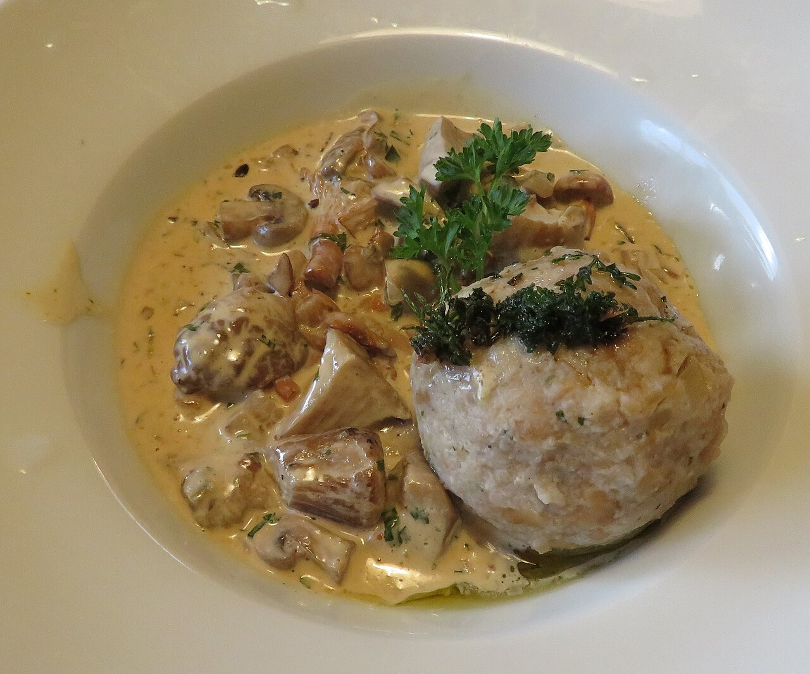

Eating well is one of the stated goals, so it gets the same treatment as the climbing. Everything named here is verified and currently operating, and the calendar traps (Sunday closures, Monday museums, seasons that start after we leave) are flagged where they bite.
The dishes to hunt
South Tyrol and the Dolomites (weeks 1-2)

The hut canon
Canederli/Knödel (bread dumplings, speck or cheese), casunziei (beetroot ravioli, the Cortina classic), polenta with game, and Kaiserschmarrn, which is a mid-afternoon summit-of-the-descent order, not breakfast. Primi run EUR 10-16 at altitude; eating big at huts and light in the valley is the value pattern.
photo: Xocolatl / CC BY-SA 4.0
_Semmelkn%C3%B6del_mit_Pilzragout.JPG){kind=link}
The picnic kit
Speck Alto Adige PGI, Kaminwurzen (little smoked hiking salamis), mountain cheese, Schüttelbrot (crisp rye, snaps like a poppadom) and Vinschgerl pair-rolls. Assembled from Maso dello Speck and Bakery Trocker in Ortisei, this is trail lunch for a week.
The bakery order
Apfelstrudel (both pulled-dough and shortcrust are legitimate), buckwheat torte with lingonberry, Strauben (fried spirals with icing sugar) and filled Krapfen. Cafe Demetz in Ortisei has made the strudel daily since 1936.
Trentino and Alto Garda (weeks 2-3)
- Carne salada: the Alto Garda signature, cured beef from the Arco-Varone-Tenno area since the 1700s. Order it twice: cruda like carpaccio with Garda oil and Trentingrana, and cotta con fasoi (seared with beans). Take a vacuum pack home from Fiore Salumi in Arco.
- Strangolapreti: "priest stranglers", spinach and bread dumplings in sage butter.
- Polenta di Storo: the reddish-gold Trentino corn; look for polenta carbonera with cheese and salami.
- Lake fish: lavarello (whitefish) grilled with Garda DOP oil is the realistic everyday order. Carpione is an endemic, red-listed Slow Food fish at EUR 60-70/kg; if the real thing appears it is worth the splurge, but "in carpione" on a menu usually means the vinegar marinade, not the fish.
- Trentodoc: Italy's original mountain metodo classico sparkling. Taste it at the source: Agraria Riva del Garda runs bookable tastings (EUR 20-33, including one pairing carne salada with their Brezza Riva), Madonna delle Vittorie in Arco does cellar-and-olive-mill visits, and Enoteca Bouquet Wine in Riva pours 400+ labels by the glass. If we do the Trento half-day, Cantina Rotari's EUR 12 cellar visit is the value pick.
- Garda Trentino DOP olive oil: the world's northernmost DOP olive area, native Casaliva variety. The Agraria shop is the one-stop for oil, wine and the out-of-season broccolo di Torbole as pesto.
Kalymnos (the open weeks)
- Mermizeli: the island salad on barley rusks with caper leaves and Kalymnian kopanisti cheese. On every real taverna's menu, each with its own version.
- Mouri: lamb stuffed with rice and liver, slow-baked overnight in a sealed clay pot. Off-season it is made to order, so we phone a day ahead: Rebetiko on the Pothia waterfront, or Michalis at Arginontas Beach Restaurant.
- Spinialo: sea squirts preserved in seawater, the sponge-divers' dish. An acquired taste and the most heritage thing on the island; order it once, at the Vathy fjord, with raki.
- Kalymnian thyme honey: famous since antiquity. Named producers to buy from in Pothia: Thymeli (Kopanezos family) and Golden Honey.
- Galaktoboureko at Michalaras: the old Pothia pastry shop's custard pie is repeatedly called one of the best in Greece.
- Plus grilled octopus everywhere, fylla (the local dolmades) and eptazimo chickpea-leavened bread.
Tables worth planning around
Dolomites
| Where | What it is | The order |
|---|---|---|
| Gostner Schwaige, Alpe di Siusi | Franz Mulser's famous hut kitchen, ~25 seats | Hay soup in a bread bowl, the 25-flower salad |
| Baita Sofie, Seceda (2,410 m) | Zero-hike gourmet hut 10 minutes from the lift | Tyrolean plates and a serious wine list; reserve, and pre-book the Seceda lift slot |
| Maso Runch, Alta Badia | Ladin farmhouse, fixed menu ~EUR 46-50 | Barley-speck soup, cajinci ravioli, pork shank |
| Rifugio Averau (2,413 m) | Among the best mountain restaurants in the Alps | Casunziei with wild herbs, from a 170-label cellar; the planned splurge lunch on the Cinque Torri day |
| El Brite de Larieto, above Cortina | Agriturismo in a larch wood, 2026 Michelin Guide | Own-dairy cheese, malga-style casunziei |
| Cafe Demetz + Bakery Trocker + Maso dello Speck, Ortisei | The breakfast, picnic and strudel supply chain | Strudel and coffee ~EUR 8-11; picnic kit as above |
One thing we simply miss: Törggelen, South Tyrol's autumn farm-feast season of new wine and chestnuts, starts in October, and even the ceremonial opener in Klausen runs 18-20 September, after we have moved south. There is no early version to chase because the fresh grape must does not exist yet. The consolation gets the same food without the theatre: year-round organic farm taverns on our Bolzano transit, Buschenschank Rielinger above Bolzano (season opens 5 September, phone ahead) or Radoarhof near Klausen. Farm speck, schlutzkrapfen, their own wine, EUR 20-35 a head.
Arco and Riva del Garda
| Where | What it is | Notes |
|---|---|---|
| Ristorante Alla Lega, Arco | Frescoed 1500s courtyard, family-run since 1956, the carne salada standard-bearer | Closed Wednesdays; dinner-only on weekdays. The post-course celebration dinner candidate |
| Osteria Le Servite, Arco | Wine-led osteria in the vineyards | Cited by the Trentodoc institute for lake-fish pairings |
| Agritur Calvola, Tenno | Working farm above Lake Tenno, fair prices | Pairs with the Canale di Tenno village + waterfall afternoon |
| OsteRiva, Riva | The lake-fish specialist | Lavarello, short supply chains, homemade pasta |
| Antiche Mura, Riva | Michelin-listed, inside the medieval walls | The splurge slot if we want one in Italy |
| Gelateria Tarifa, Arco + Gelateria Flora, Riva | The gelato answer on both towns | Tarifa is on Via Segantini, i.e. on the gear-shop street anyway |
| Pasticceria Maroni + Garda Foodie, Riva | Austro-Hungarian pastry canon; Gambero Rosso's best savoury pastry 2023 | Strudel, krapfen, zelten; savoury-pastry lunch |
Wildcard being watched: Peter Brunel's Michelin-starred restaurant 10 minutes from Arco is on a "creative pause" as of July 2026; if it reopens by September it becomes the splurge candidate. Farmers markets: Riva Fridays, Arco Tuesdays, Lake Tenno Thursdays; Arco's general market falls on 16 September.
Kalymnos
| Where | What it is | Notes |
|---|---|---|
| Aegean Tavern, Massouri | The special-dinner pick: unobstructed Telendos sunset | Tuna steak with fig sauce; reserve 1-2 days ahead |
| Harry's Paradise, Emporios | The island's cult garden restaurant; menu is whatever Evdokia cooked | Book ahead; worth the scooter ride north |
| Poppy's / Galini, Rina (Vathy fjord) | Family fish tavernas on the tiny harbour square | The after-kayak lunch: fresh catch and spinialo |
| Rebetiko + O Pantelis + Michalaras, Pothia | The traditionalist, the fish tavern, the pastry institution | Mouri (phone a day ahead), octopus, galaktoboureko |
| Zorbas / On The Rocks / Barba Stathis, Telendos | The boat-taxi dinner: EUR 3 crossing every 30 minutes until late | Zero-risk late return; the most atmospheric cheap evening on the trip |
| On the Road, Massouri + Anna's, Myrties | The everyday: EUR 3.50 gyros and generous home cooking | Taverna dinners run about EUR 20 a head with wine |
| Glaros, Ambiance, Azul, Massouri | Where climbers actually gather beyond Fatolitis | Glaros for breakfast and beta; Azul for the not-another-taverna night |
Sights that are not hikes
Venice, with luggage (arrival day, and maybe departure)
A cicchetti crawl is comfortably feasible in the arrival half-day: we land early afternoon on Wednesday 2 September, and the classics all run midweek. Bags into KiPoint at Santa Lucia station (or a Radical Storage shop, EUR 4-6 a bag), then a flat 2.5 km loop: Bacareto Da Lele (panini from EUR 1, wine from EUR 1), across Rialto to All'Arco (the best cicchetti counter in the city, picked clean by 14:00, so it depends on the landing time) and Cantina Do Mori, documented since 1462, cash only. About EUR 25-35 total for two, including four glasses. If the flight runs late, Vino Vero in Cannaregio and Cantina Do Spade (open daily since 1448) hold the evening. Weigh it against pushing straight to the mountains; the train to Ortisei still needs about five hours.
Along the Italian route
- Ötzi the Iceman, Bolzano (EUR 13): the 5,300-year-old mummy, his axe, his clothes, his tattoos. We pass through Bolzano twice; the Thursday 10 September transit works, the Mondays do not (closed Mondays in September).
- Trento half-day: Buonconsiglio Castle (EUR 10) with the Torre Aquila "Cycle of the Months" frescoes (+EUR 2.50, timed slots, book), MUSE science museum (EUR 11, Renzo Piano building), Piazza Duomo. Luggage goes to the bus-station deposit or the Grand Hotel opposite the station for EUR 3.
- Arco Castle (EUR 5): the cliff castle above the crag town, 20 minutes up through olive groves, open to 19:00 in September. Best late afternoon, when the Sarca valley goes gold.
- Riva evening set: the Bastione panoramic lift (EUR 10 return, runs to 23:30, so it works after dinner), Torre Apponale's 165 steps (EUR 2), and the old-town passeggiata.
- Canale di Tenno + Varone waterfall: an intact medieval stone village, the turquoise Lake Tenno, and a EUR 7 gorge waterfall, all on one bus road from Riva; pairs with lunch at Agritur Calvola.
- Marocche di Dro: the largest ancient rock-avalanche field in the Alps, with 190-million-year-old dinosaur footprints on a marked trail, free, 10 minutes north of Arco.
- Campana dei Caduti, Rovereto: the world's largest swinging bell, cast from melted WWI cannons, rung 100 times at 21:30 every evening. 35-40 minutes from Arco; combine with a Rovereto dinner if the timing tempts us.
- Castel Toblino: a lake-moated castle directly on the Trento-Arco road; terrace coffee or a glass of Vino Santo, photo, onward. No detour at all.
- Cortina without boots: the Regole museums on a EUR 12 combined ticket (fossils, Ampezzo ethnography, the Rimoldi modern-art collection; closed Mondays), the Corso Italia evening passeggiata, and the Tofana cable car to 3,244 m as pure sightseeing (EUR 45 to the summit terrace; the EUR 35 mid-station gets most of the view). Worth knowing: the rebuilt Olympic sliding centre does not open to the public until October, and the 1956 ice stadium's public skating is flagged temporarily closed, so the Olympic legacy is a facade-viewing item this September.
Kalymnos rest days
- Sponge-diving heritage day: the Valsamidis Sea World Museum at Vlychadia (free, built by a sponge diver, 17,000+ finds), a swim at Vlychadia, octopus balls at O Sfouggaras next door, then a real workshop in Pothia (ATSAS/Kalinda near the port, or N.S. Papachatzis on the waterfront) where sponges are still trimmed by hand. Buy the souvenir sponge there, not on the cruise-front.
- Vathy fjord by kayak: Kalymnos Kayak Centre in Rina rents by the hour (about EUR 5-6) and lends climbing shoes for deep-water soloing straight off the kayak, which for two people on a climbing trip is about the perfect rest day. Fish lunch at Poppy's after.
- Pera Kastro: the Knights' fortress village above Chora with nine whitewashed chapels, extensively restored in 2025, free and always open. Go late afternoon; the windmills below are the postcard shot.
- Swims without a car: Massouri beach below the strip, Myrties, and Melitsahas fishing harbour; by scooter, Arginonta and the wild fjord-bay at Palionisos; by boat taxi, Hohlakas on Telendos.
- Sunsets: the whole Massouri strip faces Telendos due west; once, climb the 20 minutes to the Grande Grotta rim at dusk without ropes, which is the island's best free spectacle.
Athens exit day
Bags to LeaveYourLuggage at Syntagma (EUR 4 a bag) or a Bounce shop at Monastiraki, then one of two shapes. Monuments: the 08:00 Acropolis slot (EUR 30, timed entry; booking opens 60 days ahead, so early August for our dates), down by 10:30, then souvlaki at Kostas on Agia Irini square (since 1950, closed weekends, fine on our Tuesday or Wednesday) or O Thanasis in Monastiraki. No-monument: the Varvakios central market walk with lunch in the cellar at Diporto (no sign, no menu, since 1887), cured meats at Karamanlidika tou Fani and Miran, loukoumades at Krinos (since 1923), and the Evripidou spice street for edible souvenirs. Skip the taverna row on Monastiraki square itself.
The rest of the open-weeks menu
The food case for the other candidates, in brief; logistics live on Itinerary. Montenegro and Albania now lead alongside Kalymnos: Njeguši prosciutto and smoked cheese bought in the village on the serpentine road to Lovćen, konoba seafood on the Bay of Kotor, lamb and kačamak in Žabljak; then across the border, guesthouse trout and flija in Theth, byrek everywhere, Shkodra's lake carp baked in a clay pot for €10 a head, and a last-night fërgesë in Tirana.
- Sicily + Aeolians: granita con brioche at Savia (since 1897) on Via Etnea, a market lunch at Mm!! inside Catania's La Pescheria, pane cunzato and Salina-lemon granita at Da Alfredo in Lingua, and Malvasia tasted where it grows. Arguably the best eating of any option on this site.
- Istria: the headline is white truffle season, peaking from late September around Motovun: hunt with the dogs, then eat the find shaved over fuži pasta, with Teran in a hilltop konoba. The one option where food is the actual itinerary.
- Slovenia: kremšnita done properly at Slaščičarna Šmon in Bled, Soča trout in Bovec, and Ljubljana's Odprta kuhna open-air food market on Fridays (season runs to 9 October).
- Munich: the Maß (EUR 14.90-15.90 in 2026), half chickens and pretzels in the Augustiner tent, and the calmer Oide Wiesn corner. Midweek only; the final weekend is the crush.
What to skip
- Therma hot spring, Kalymnos: still listed by tourism sites, but the spring has stopped flowing and the building has been shut since 1990. Defunct.
- Chrysocheria castle, Kalymnos: fine from the road; Pera Kastro is the one worth the legs.
- Sponge shops on the Pothia cruise-front: retail without the workshop. The real thing is five minutes away.
- Chasing Törggelen in mid-September: it does not exist yet; use the Buschenschank workaround above.
- "In carpione" menu lines: usually the marinade, not the rare fish. Ask.
- Bairaktaris and the Monastiraki square taverna row, Athens: the tourist-trap end of an otherwise great food block.
The bookings to make once dates firm up:
- Acropolis 08:00 tickets: booking window opens 60 days out, early August, if we run 4-5 weeks.
- Seceda lift time slots (new for 2026) + Baita Sofie table, a few days ahead in week 1.
- Aegean Tavern and Harry's Paradise: a couple of days ahead on the island. Mouri: phone a day ahead.
- Trentodoc tasting at Agraria: book online once the Arco dates are fixed.
- Torre Aquila fresco slots in Trento, if we take that half-day.
Sources
- Alto Garda food: carne salada, lake fish, Agraria tastings, Madonna delle Vittorie, Alla Lega, Antiche Mura, market days
- South Tyrol: Törggelen season, Rielingerhof, Radoarhof, Maso dello Speck, Seceda lift slots
- Sights: Ötzi museum, Buonconsiglio, Arco Castle, Bastione lift, Marocche di Dro, Campana dei Caduti, Tofana cable car, Regole museums
- Venice: Da Lele, All'Arco, Do Mori, Do Spade, Vino Vero, KiPoint luggage
- Kalymnos: island dishes, mouri, Thymeli honey, Harry's Paradise, Aegean Tavern, Kalymnos Kayak Centre, Pera Kastro, Therma status
- Athens: Acropolis tickets, luggage, Kostas, Karamanlidika, Krinos